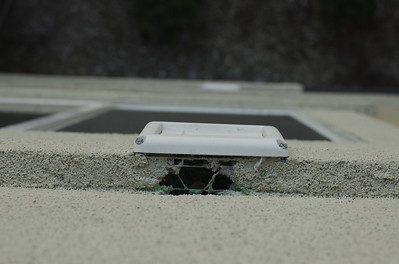

Mousecapades II
We had a mouse get into our home back in may as you may remember. Maybe you don't, or maybe you never knew—either way, it happened. It wasn't the best experience, but we were pleased to limit our damages and be done quickly. Little did we know that a little over four months later we would end the lives of at least 14 mice. “At least?” That's right... at least 14, since I don't know how many fury little things ate the poison I spread all around the place. Thankfully, we're now celebrating two weeks of silence tonight. Allow me to explain.
We figured that the mouse back in May was a fluke. Somehow the little guy got into our building of 12 units, and found his way to our place on the second floor and specifically, for whatever reason, to our shower, and ended his life while enjoying the sweet yet salty flavor of our peanut butter. Obviously he didn't get a chance to share his culinary opinion of Skippy with his friends, unless his spirit/ghost is just a slow mover and did it a few months later.
“Dude! You're not going to believe who I dreamed about the other night! Remember Timmy? You know... the mouse from the other corn row who wanted to go over to those buildings? Yeah, well, I had a dream where he was telling me I should like... go over to the buildings and seek out something he was calling ‘brown heaven’—the guy claimed it would go perfectly with all the fruit we've been firing down lately.”
Ratatouille was an enjoyable movie, but these recent events don't make me like mice (or rates) any more than I did before. Maria told me one day she thought she heard some noise by our front door. I finally heard it as well, and knew it was some kind of a rodent in the wall. Long story short, we heard them all over the place. By the front door, behind the fridge, under our dining “room” window, then in the girls' bedroom wall. All of these were in the wall, never actually inside. It's not like they were even willing to come out in open combat, just hide in our walls.
I'm sure any of you can imagine just how frustrating it is to hear that kind of noise in your wall, yet feel totally powerless to do anything about it. It's not like we can go putting holes in the walls all over the place to kill the things, the goal was to find how they were getting in, and kill them on the outside. I'm not really in favor of having rotting mice in our walls. That's sick.
We did get some help on this. Our landlord got an exterminator to come in, and I spread poison all around the building in hopes of trying to minimize the mice coming towards our place. The local HOA were total idiots about the whole issue by saying, “We can't control all of nature.” I wish I were making that line up. Essentially they've communicated the mixed message of "If it's not in your home, you're not allowed to change it." yet also "We can't control things outside of your home, so don't look to us do to that." So... who's going to spread poison, and figure out where the holes in the buildings are? Final answer: me.

Again, for the sake of time (and honestly we know your/my interest is waning here), we found one entrance (roughly the size of a 50 cent piece), which explained how the mice were getting into half of the house, but we couldn't figure out the other half. Well, two weeks ago, this mystery was solved. You're seeing here one of the two entrances on the other side of the building. Above both exhaust vents (this one is for our dryer) there were these nice gaping holes. I thought to myself, “Well of course they're getting into our place – we're leaving the door wide open for them.” After spreading more poison, I plugged these holes with aluminum foil as well.
Although I'm feeling froggy for having caught/killed 14 mice, I still can't get over that number. Part of me wishes it were divisible by 3, just for fun, but another part of me is disgusted that we've caught so many. Sticky traps, poison, old-school wooden traps, and tin cats – all essential to our battle. I just continue to be thankful that we found the holes we did and were able to patch them up, at least temporarily. I can't understand why the three holes were there to begin with, but that's a separate blog entry.
I kind of wish I had some sort of decent ending to this post... but I don't. Happy “2 Weeks without Hearing Mice in Our Walls” day! Go listen to some pretty decent Beatles covers. (From the soundtrack for "Across the Universe", I particularly enjoy All My Loving and Something - probably because I like the guy's voice. Being for the Benefit of Mr. Kite is worth a listen, only because the original was whacked enough, and this modern take is curious. Blackbird is an abomination. Sarah McLachlan does it much better, in case you're curious and don't have the original handy.)
- Prior: Farewell, Recipes
- Next: Unique to the Taker